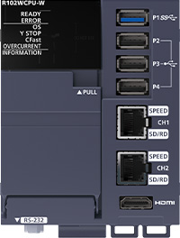
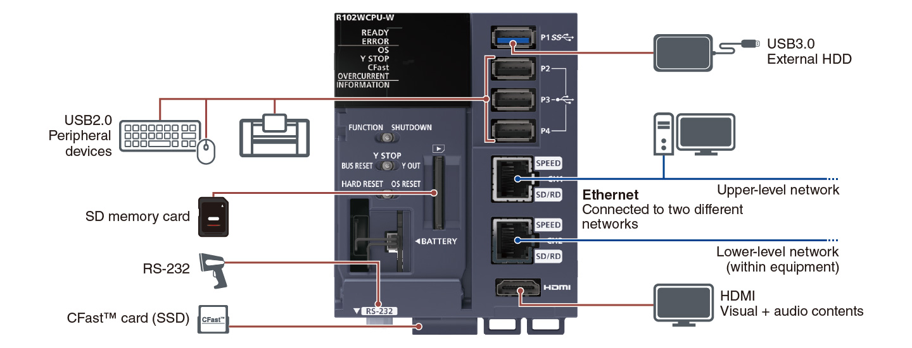
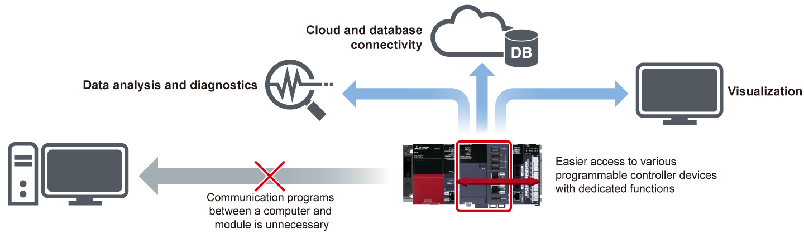
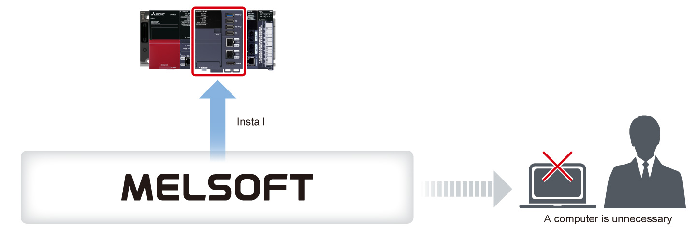

Controllers MELSEC iQ-R Series Fitur Produk -CPU-

Modul MELSECWinCPU
Modul MELSECWinCPU menjalankan aplikasi Windows® dan mewujudkan koordinasi data dengan modul CPU dan modul I/O lainnya dengan mudah. Dilengkapi dengan fitur-fitur yang tangguh, modul ini menawarkan sistem berbasis komputer yang stabil bahkan di lingkungan yang keras. Desain perangkat keras tanpa kipas memungkinkan pengoperasian pendinginan alami, menghilangkan risiko penghentian pengoperasian karena kegagalan kipas.

Fitur<sup>Aberbagai pilihan antarmuka</sup>
- General interface
- Dilengkapi dengan antarmuka yang mirip dengan komputer, sistem ini dapat dengan mudah dikonfigurasikan dengan perangkat yang tersedia secara luas
- Port USB internal, dua port Ethernet, RS-232, dan HDMI tersedia, juga dengan kartu CFast™ dan kartu memori SD untuk penyimpanan didukung

Pemrosesan informasi menggunakan Windows®
- Pemanfaatan Windows®
- Konfigurasi beberapa CPU
- Pemanfaatan aset pengembangan
- Dengan memanfaatkan aset Windows® yang familiar di kantor, pemrosesan informasi seperti penghitungan/pemrosesan data kontrol dan pertukaran data dengan komputer dapat dilakukan
- Modul, yang tergabung dalam konfigurasi beberapa CPU, dapat dengan mudah menambahkan fungsi yang memanfaatkan Windows® ke peralatan yang ada
- Lingkungan pengembangan yang mudah dipahami seperti Microsoft® Visual Basic® dan Visual C#® serta aset pengembangan yang ada dapat digunakan
Sistem TI mudah dikonfigurasi dengan memanfaatkan fungsi yang telah terpasang sebelumnya
- Konfigurasi sistem TI yang mudah
- Sistem TI di lokasi produksi dapat dikonfigurasi menggunakan lingkungan pengembangan Microsoft® Visual Studio®
- Modul MELSECWinCPU dapat dengan mudah berkomunikasi dengan sistem pengontrol yang dapat diprogram dengan menggunakan fungsi yang telah terpasang sebelumnya (fungsi khusus modul Pengontrol C dan fungsi komunikasi MELSEC)
- Komputer tidak lagi diperlukan di lokasi produksi, sehingga menghilangkan masalah apa pun Instalasi LAN

Pengembangan di tempat mengurangi risiko pelanggaran data
- Keamanan yang tangguh
- Karena meningkatnya masalah keamanan, semakin sulit untuk membawa komputer ke lokasi produksi. Modul MELSECWinCPU merupakan alternatif yang sangat baik untuk komputer
- Memasang modul MELSECWinCPU di panel kontrol dapat mengurangi risiko pencurian teknologi dan data serta serangan virus
- Ketika perangkat lunak rekayasa terpasang dan keyboard, mouse, dan layar tersambung, perawatan yang mendesak dapat ditangani dengan mudah

Spesifikasi
Spesifikasi modul MELSECWinCPU
| Item | R102WCPU-W |
|---|---|
| Hardware | |
| MPU | Intel Atom® E3930 Dual Core |
| Main memory (byte) | 4G |
| Internal storage (CFast™) (byte) | 60G |
| Perangkat Lunak | |
| OS | Windows® 10 IoT Enterprise LTSC 2019 |
| Programming language | C/C++, Visual Basic®, C# |
| Communication interface | |
| Extension SSD | CFast™ (SATA Ⅲ) (1x) |
| USB | USB3.0 (1x)/USB2.0 (3x) |
| Ethernet | 1000BASE-T/100BASE-TX/10BASE-T (2x) |
| SD memory card | SDHC High Speed (1x) |
| Display | |
| Antarmuka | HDMI 1.4b (1x) |